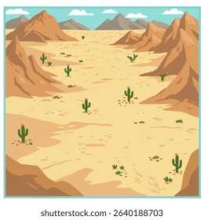
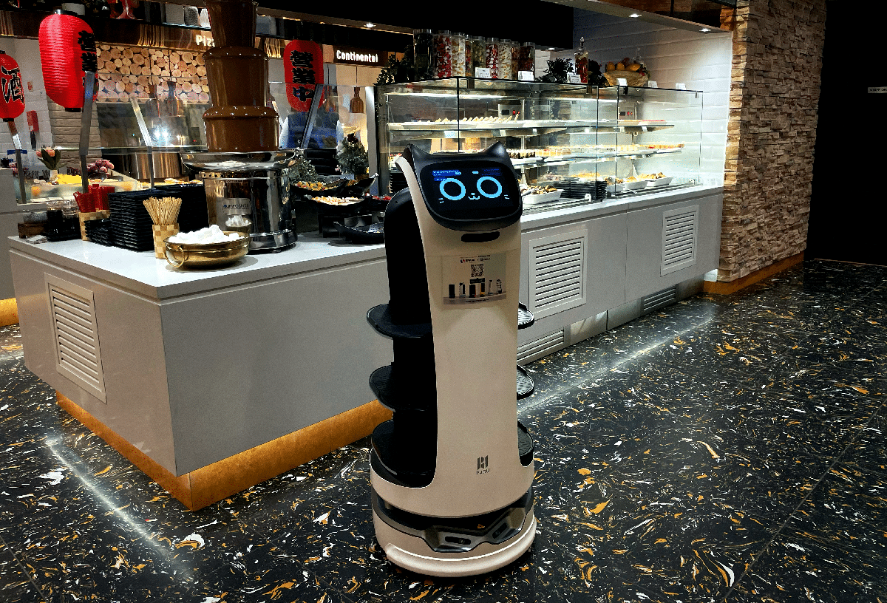
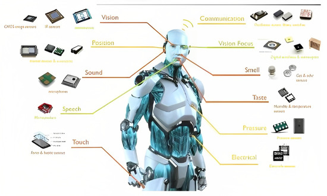

Different types of robots
Different types of robots are used for different purposes.
Production Robots
Industrial or Factory robots, such as SCARA robots or articulated arm robots, are robots designed for
precision, speed and endurance in controlled and repetitive settings like assembly lines
they are designed to carry out factory tasks efficiently and many times over.
Military Robots
Military and Defense robots, such as Unmanned Aerial Vehicles or Autonomous Combat robots, are robots
that specialize in various needs for ruggedness, autonomy, stealth or firepower.
These robots can negate the need for humans in risky places in combat scenarios or enhance human
capabilities in battle

Commercial robots
Household and Personal robots, such as robot vacuum cleaners or social robots, are robots designed to be
consumer friendly, with emphasis on safety and and usability
These robots serve more commercial functions such as helping with household chores or simulating human
interactions.
Use the input controls or WASD keys to guide the spot-explorer robot to the
Waypoint!
Reach a score of 15 within the time limit!
Score: 0
Time Left: 30s

Uses of robots in everyday life
Robots at home
Robots used at home are used as either Service or Social robots. They perform functions such as taking
over mumdane household chores like vacuum cleaning or mopping,
or can serve as entertainment or teaching assistants such as toy moving robots or talking robots
Robots in restaurants
Robots can also serve in places like restaurants as service robots. These robots can carry out tasks such
as serving food or cooking.
These robots improve the restaurants by reducing waiting time and taking over tasks that are more
mundane such as cleaning dishes

Robots in themeparks
Robots are also used in places such as themeparks as entertainment robots. entertainment robots are
usually aesthetically pleasing and colourful.
These robots are built to provide fun and entertainment, for example by simulating various fictional
characters and their movements
Robots in Hospitals
Robots are now also used in healthcare and medical situations. These robots can be used to assist
surgeons in making precise or complicated surgical operations. these robots can help avoid mistakes and
unnecessary scars in surgery.
can also serve to help those with need for medical assistance, such as reminder robots for those with
important medicines.

How robots function and interact with the world
How a robot operates
Robots that don't use remote controls are operated by computer programmes. A Computer in the robot acts
as the equivalent of a human brain, taking inputs to perform actions from its program and sending them
to
its parts.
Similar to how the human brain sends signals through nerves to muscles, the computer program sends
signals through the wires of a robot to the robots actuators such as robot motors to command them to
rotate, making the robot move.
Conversely, when a program sends an input to stop, similar to a human brain deciding to stop, the
computer sends signals through the wires to the actuators to command them to stop.
Senses of a robot
Robots can also simulate various human senses using different sensors to perceive the world around them,
influencing their program's actions.
Some examples of such sensors are Visions Cameras that simulate eyesight by capturing images and video
to allow for object recognition and navigation, microphones to simulate hearing by recieving sound waves
for voice recognition, and tactile sensors to measure pressure, detect contact, or detect applied force.
